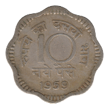

Ten Paise
First Series
1957
1957-◆

1958
1958-◆
 1959
1959-◆
 1963
1963-◆
1963
1963-◆
1964
1964-◆
1964-★
1965
1965-◆
1965-★
1966
1966-◆
1966-⟐
1968
1968-◆
1968-★
1971-◆
Second Series
1971
1971-◆
 1971-★
1971-★
1972
1972-◆
1973
1973-◆
1973-★
 1974-◆
1974-◆
1974 FAO
 1974-◆ FAO
1974-★ FAO
1974-◆ FAO
1974-★ FAO
1974-◆ FAO
1975
1975-◆
1975 FAO
1975-◆ FAO
1976
1979 Year of the Child
1979-◆ Year of the Child
1979-★ Year of the Child
Third Series
1983
1983-◆
1983-★
1984
1984-◆
1984-★
1985
1985-◆
1985-★
1988
1988-◆
1988-★
Fourth Series
1988
1988-◆
1988-★
1988-•
1988-C
1989
1989-◆
1989-★
1989-•
1990
1990-◆
1990-★
1990-•
1991
1991-★
1991-•
1992-•
1993-★
1996
1996-◆
1996-•
1997
1997-◆
1997-★
1998
1998-◆
Back to Republic of India
Back to India Main Page
Back to Home